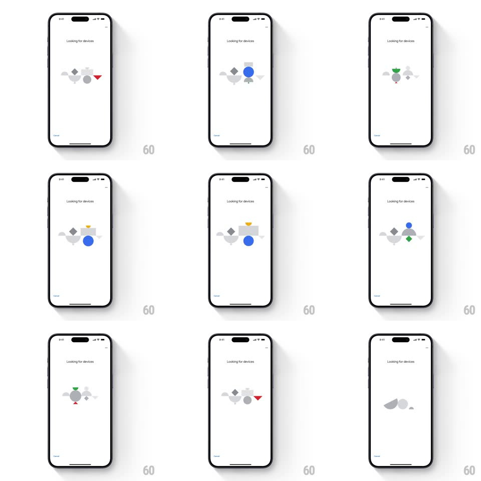

Media
Frame-by-frame

Rebuild this interaction 1:1: Google Home's "Looking for devices" loader - a cluster of geometric shapes (circles, triangles, diamonds, rounded blobs in grey with single colored accents - blue, red, green, yellow) that shuffle, swap positions, and flash their colors in a continuous searching rhythm under the "Looking for devices" label.

Rebuild this interaction 1:1: Google Home's "Looking for devices" loader - a cluster of geometric shapes (circles, triangles, diamonds, rounded blobs in grey with single colored accents - blue, red, green, yellow) that shuffle, swap positions, and flash their colors in a continuous searching rhythm under the "Looking for devices" label. ## Integration Integration: stack-agnostic spec - springs given as stiffness/damping, timed motions as duration + curve; map every value to your framework and animation library of choice. ## Scene White page, "Looking for devices" centered headline, progress bar bottom, and the shape cluster centered - roughly a cloud of 6-8 primitive shapes at low opacity grey, one or two lit in Google colors at a time. ## Motion spec Pattern: shuffling geometric search loop. - The cluster cycles on a ~3s loop: on each beat, 1-2 shapes light up in full color (blue circle, red triangle, green diamond, yellow half-disc) while the rest sit at ~15% grey, then a different pair lights (crossfade 300ms). - Shapes drift: each shape wanders a few px around its anchor (translate +/-6px, 2s-3s phase-offset ease-in-out loops), so the cluster is always subtly rearranging. - Occasionally shapes swap positions outright (two shapes exchange anchors along short arcs, spring ~300/26, 500ms), reading as the search "re-sorting". - Scale pulses accompany each color flash (lit shape scale 1 -> 1.15 -> 1, 400ms). ## Calibration - Never more than two shapes colored at once - the grey cloud is the constant. - The motion is playful but quiet - small distances, soft easings, no spins. ## Reduced motion Static grey cluster with one colored shape; progress bar carries the loading state. ## Don't miss - The colored accents are Google's four brand colors - no others. - Shapes overlap loosely like a cloud, not aligned to a grid.